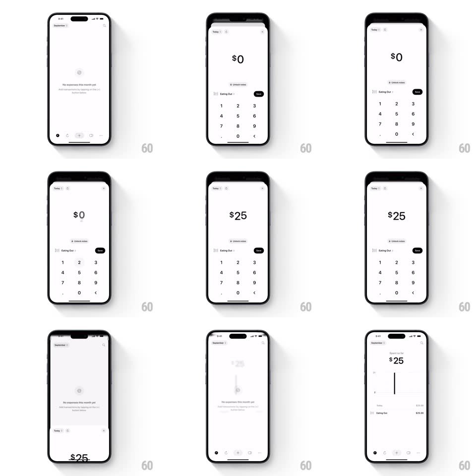

Media
Frame-by-frame

Rebuild this interaction 1:1: Five Cents' add-expense flow - from the empty state, tapping + raises a keypad sheet where the amount rolls upward digit by digit ($0 -> $2 -> $25), and saving drops the sheet to reveal the list with the new row and a graph line drawing in.

Rebuild this interaction 1:1: Five Cents' add-expense flow - from the empty state, tapping + raises a keypad sheet where the amount rolls upward digit by digit ($0 -> $2 -> $25), and saving drops the sheet to reveal the list with the new row and a graph line drawing in.
## Integration
Integration: stack-agnostic spec - springs given as stiffness/damping, timed motions as duration + curve; map every value to your framework and animation library of choice.
## Scene
Empty state ("No expenses this month yet"). Sheet: "Today" header, big centered "$0" amount, category row ("Eating Out") with a Date pill, numeric keypad (1-9, ., 0, backspace). Saved state: "$25" header over a bar/line chart, "Today" row "Eating Out $25.00".
## Motion spec
Pattern: rolling-digit entry with sheet-to-list reveal.
- Tap + in the tab bar: the sheet rises (spring ~320/26, ~350ms); amount starts at "$0".
- Each keypad tap: the new digit rolls in from below (like an odometer, 180ms ease-out, existing digits shift left) and the key flashes gray (100ms); haptic per tap.
- Backspace rolls digits back out downward.
- Tap Date pill (check): the pill fills black with a white check (150ms), then the sheet slides down + fades (280ms).
- Behind it the list builds: the "$25" header fades in, the chart's vertical line draws top-down (300ms), and the new row slides up from the bottom edge + fades in (300ms, spring ~340/24).
## Calibration
- Digits roll vertically, never crossfade - the odometer feel is the point.
- The keypad is custom (light, round keys), not the system keyboard.
## Reduced motion
Digits crossfade; chart and row fade in without translation.
## Don't miss
- The amount keeps the "$" prefix fixed while digits roll beside it.
- The reveal order after save is header -> chart -> row, a single top-down cascade.